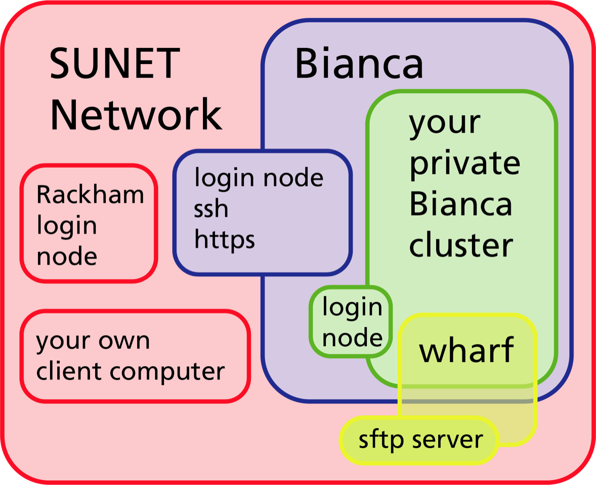

Objectives
- We'll go through the methods to tranfer files
- wharf
- transit server
- rsync, scp/sftp
- pros/cons of different solutions
Warning
It is important to keep the entire chain of transfering the data secure
How does it work?¶

The Wharf¶
Wharf is a harbour dock
- The Wharf area can be reached from both Bianca and any other place on Bianca.
- Therefore it serves as a bridge between Internet and Bianca.
Data transfers:¶
- https://www.uppmax.uu.se/support/user-guides/bianca-user-guide/
- section 3: Transfer files to and from Bianca
The wharf location¶
-
The path to this folder, once you are logged into your project's cluster, is:
/proj/
/nobackup/wharf/ / - E.g. /proj/sens2016999/nobackup/wharf/myuser/myuser-sens2016999 -
To transfer data from Bianca, copy the files you want to transfer here
-
To get the files transfered to the wharf area from outside, move the files to you project folde or home folder.
-
Please note that in the wharf you only have access to upload your files to the directory that is named:
- e.g. myuser-sens2016999
¶
b. Second step is from a computer outside of Bianca. c. Using standard sftp client d. Some other sftp client e. Mounting the sftp-server with sshfs f. Bulk recursive transfer with only standard sftp client g. Transit Server
First steps¶
Using standard sftp client (commandline)¶
$ sftp -q <username>-<projid>@bianca-sftp.uppmax.uu.se
Ex.
$ sftp -q myuser-sens2016999@bianca-sftp.uppmax.uu.se
Notice the different host name!
The -q flag is to be quiet (not showing the banner intended to help someone trying to ssh to the host), if your client does not support it, you can just skip it.
As password you use your normal UPPMAX password directly followed by the six digits from the second factor application from step 1.
Ex. if your password is "VerySecret" and the second factor code is 123 456 you would type VerySecret123456 as the password in this step.
Once connected you will have to type the sftp commands to upload/download files. Have a look at the Basic SFTP commands guide to get started with it.
Please note that in the wharf you only have access to upload your files to the directory that is named:
so you will want to cd to that directory the first thing you do.
sftp> cd myuser-sens2016999
Alternatively, you can specify this at the end of the sftp command, so that you will always end up in the correct folder directly.
$ sftp -q
sftp supports a recursive flag (put -r), but it seems to be very sensitive to combinations of different sftp servers and clients, so be warned... a bit further down you can see a rough solution for bulk transfers.
Some other sftp client¶
Please notice that sftp is NOT the same as scp. So be sure to really use a sftp client -- not just a scp client.
Also be aware that many sftp clients use reconnects (with a cached version of your password). This will not work for Bianca, because of the second factor! And some try to use multiple connections with the same password, which will fail.
So for example with lftp, you need to "set net:connection_limit 1". lftp may also defer the actual connection until it's really required unless you end your connect URL with a path.
An example command line for lftp would be
lftp sftp://
Mounting the sftp-server with sshfs on you local machine¶
Mount the wharf on your machine
- This is only possible on your own system.
- sshfs allows you to mount the wharf on your own machine.
- You will be able to copy and work on the data using your own local tools such as cp or vim.
- Remember that you are neither logged in on the distant server, nor is the data physically on your local disk (until you have copied it).
Warning
UPPMAX doesn't have sshfs client package installed for security reasons. sshfs is available on most Linux distributions: install the package sshfs on Ubuntu, fuse-sshfs on Fedora, RHEL7/CentOS7 (enable EPEL repository) and RHEL8 (enable codeready-builder repository) / CentOS8 (enable powertools repository).
Bulk recursive transfer with only standard sftp client¶
- It seems to be rather common with directory structures with symbolic links inside the directories that you should transfer.
- This is a very simple solution to copy everything in a specific folder (and follow symbolic links) to the wharf.
============== ~/sftp-upload.sh ==============
!/bin/bash¶
sftp-upload.sh¶
find $ -type d | awk '{print "mkdir","\""$0"\""}' find $ -type f | awk '{print "put","\""$0"\"","\""$0"\"" }' find $* -type l | awk '{print "put","\""$0"\"","\""$0"\"" }'
With this script you can do:
cd /home/myuser/glob/testing/nobackup/somedata
~/sftp-upload.sh *|sftp -oBatchMode=no -b-
The special "-b" makes the script stop on error.
Transit¶
Recommended way from Rackham? - To facilitate secure data transfers to, from and within the system for computing on sensitive data (bianca/castor) a service is available via ssh at transit.uppmax.uu.se. - You can connect to transit via ssh. Once connected, you should see a short help message. The most important thing there is the mount_wharf command which you can use to mount a project from the bianca wharf
*More...
NGI Deliver¶
- Not covered here but
- https://www.uppmax.uu.se/support/user-guides/deliver-user-guide/
- https://www.uppmax.uu.se/support/user-guides/grus-user-guide/
keypoints
- The "WHARF" works like a dock at the harbour.
- There are several ways to use the wharf to tranfer files
- copy
- transit server
- rsync, scp/sftp